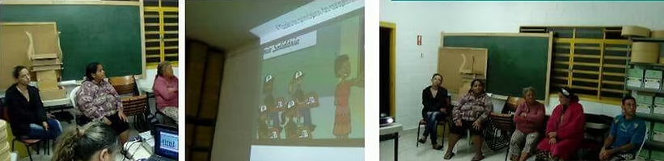
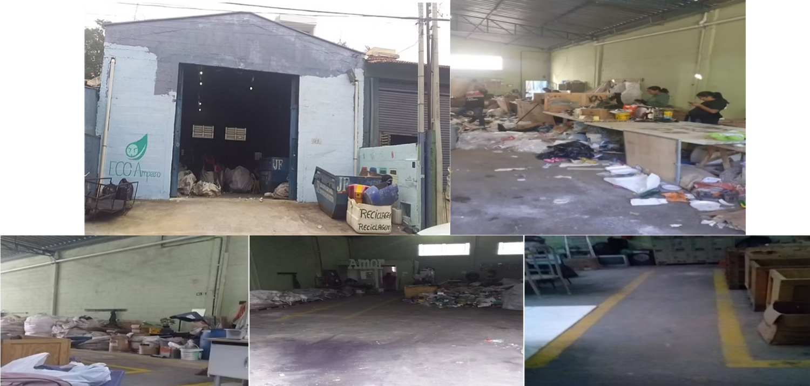

O Início de um Sonho Coletivo
A trajetória da Cooperativa Eco Amparo nasceu da necessidade real de transformar vidas. Por meio do Projeto de Fortalecimento de Vínculo da Associação AMAR (Ação Maior de Amor e Restauração), realizado no Conjunto Habitacional Vila das Pedras (Jd. Figueira), identificou-se que a maioria dos moradores já trabalhava com reciclagem, mas de forma individual e informal. Sem estrutura, cada trabalhador armazenava e separava os materiais no próprio terreno, gerando acúmulo de resíduos e condições insalubres de trabalho.

Com o apoio do CISBRA (Consórcio Intermunicipal de Saneamento Básico da Região do Circuito das Águas), foram promovidos cursos de capacitação, ações de conscientização e visitas técnicas a outras cooperativas da região. Assim, em 2017, foi oficialmente fundada a Cooperativa de Trabalho dos Catadores de Materiais Recicláveis Eco Amparo (CNPJ: 30.706.617/0001-98), com a missão de gerar trabalho digno e autossustento para famílias de baixa renda e pessoas em situação de vulnerabilidade social.

No começo, a estrutura era simples: o espaço interno contava apenas com refeitório, sala de reuniões, banheiros e uma pequena cozinha, enquanto toda a triagem dos materiais precisava ser feita na área externa, sob uma lona improvisada.

Os Primeiros Resultados e a Pausa Necessária
Mesmo com estrutura limitada, a dedicação da equipe trouxe resultados expressivos logo no início:
- Outubro a dezembro de 2017: 12 cooperados processaram 24,96 toneladas de resíduos (recuperando 20,80 toneladas).
- Janeiro a outubro de 2018: 9 cooperados triaram 63,38 toneladas (recuperando 52,81 toneladas).
Apesar do empenho, a falta de apoio estrutural e financeiro fazia com que a retirada mensal ficasse abaixo de meio salário mínimo por pessoa. Sem condições de garantir o sustento das famílias, a cooperativa precisou suspender suas atividades em outubro de 2018.
Reativação e Retomada com Dignidade
Em fevereiro de 2021, um esforço conjunto entre a Associação AMAR e o Fundo Social de Solidariedade de Amparo (na época presidido pela primeira-dama Sra. Léia Carolina Leite de Moraes) possibilitou a reativação da Eco Amparo, abrindo portas de trabalho inclusive para participantes do Projeto Segunda Chance.
Com a documentação regularizada, a cooperativa alugou um barracão coberto na Av. Rio Nilo, 139 (Jd. Figueira), garantindo mais conforto e segurança. Embora o trabalho ainda fosse manual — com mesas improvisadas de madeira e sem maquinário —, a parceria com a Secretaria Municipal do Meio Ambiente permitiu que o caminhão da coleta seletiva pública (que atendia 40% da área urbana) passasse a entregar os materiais diretamente no barracão.
Naquele período, a rotina dos 12 cooperados era dividida em etapas bem definidas:
- Recebimento e descarregamento dos materiais trazidos pela coleta seletiva municipal no centro do barracão.
- Abastecimento contínuo das mesas e triagem manual dos recicláveis.
- Fechamento, organização e venda diária dos big bags para otimizar o espaço limitado.

Ao longo de 2021, a cooperativa processou 168,20 toneladas e recuperou 140,16 toneladas. Ainda assim, os custos fixos mensais (cerca de R$ 4.500,00 com aluguel, água, energia e contabilidade) consumiam grande parte da receita, mantendo a retirada média dos cooperados em torno de meio salário mínimo.
Consolidação e Parcerias Estratégicas
Um grande passo para a estabilidade da cooperativa aconteceu em junho de 2022, com a assinatura de convênio com a Prefeitura Municipal de Amparo (Contrato nº 153/2022). O repasse mensal passou a custear o aluguel, a água e a energia de um galpão muito maior, localizado na Rua Benedito Lino de Campos, 75 (Jardim Modelo).
Com a nova estrutura, o local foi inaugurado em agosto de 2022 como Ponto Ecológico do município, ampliando o atendimento à população para receber também materiais de logística reversa, como pneus, lâmpadas, eletrônicos, pilhas e óleo de cozinha usado. Em dezembro do mesmo ano, uma parceria com a iniciativa privada garantiu o empréstimo (comodato) de uma prensa enfardadeira por 24 meses, modernizando o processo de trabalho.
Nova Sede e Resistência
Em julho de 2024, após a solicitação do imóvel anterior pelo proprietário, a Eco Amparo mudou-se para sua sede atual na Rua Suécia, 200 (Loteamento Nardini) — um ponto estratégico e mais próximo ao Centro, o que facilita o acesso dos cooperados e da comunidade. Devido ao espaço mais compacto da nova unidade, a operação voltou a focar exclusivamente nos materiais recicláveis convencionais.


Mesmo diante dos desafios burocráticos enfrentados durante a transição e renovação dos contratos públicos em 2024 — período em que a equipe manteve a triagem funcionando sem interrupções apesar de atrasos nos repasses —, a Cooperativa Eco Amparo segue firme em seu propósito: transformar resíduos em oportunidades, proteger o meio ambiente e assegurar o sustento digno de dezenas de famílias amparense.